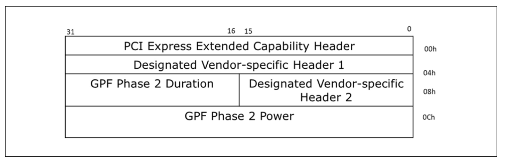

序言
上一篇主要讲了一下cxl的三种协议和三种设备，这一篇主要讲一下cxl设备底层的一些基本工作原理。在cxl的拓扑结构当中可以有cxl host bridge，cxl root port， cxl switch和cxl endpoint这几种类型的设备，下面我们来具体看一下不同类型设备在硬件层的一些工作机制。
DVSEC
DVSEC(Designated Vendor-Specific Extended Capbility)在cxl spec当中新引入的一个cap，cxl拓扑结构当中的每一种设备都会有一个或者多个DVSEC，然后通过这些DVSEC来实现相关信息如register的呈现。下面我们来先看一下cxl endpoint设备的PCIe DVSEC。具体如下图所示：

接下来我们看一下cxl cap 相关标志位示意

从上图可以看到前三个bit分别表示cxl 的cache、 io、mem这三个协议使能状态，cxl.io default是必须要使能的。bit3和bits[5:4]都是跟cxl.mem相关。

bit 6 主要跟cache writeback和invalidate 能力有关，在cxl.cache 使能的情况下这个必须是要设置上的。bit7，bits[10:8] ,bit 11都跟设备 Reset有关联。

这里说一下Viral handling，它是cxl新引入的一种error检测机制。在Viral handling 处理机制当中，如果发现相关error它会沿着cxl 拓扑架构逐级上报。
上面花了点篇幅来介绍cxl cap的相关标志位，下面我们来看一下cxl control 相关标志位。
bit 0，bit 2 是可读写的也就是说可以控制设备cache和mem的enable。在往下继续之前我们先讲一下什么是Snoop Filter。在cache一致性场景下，每个cpu上都有一个snooper也就嗅探器或者说agent，它的作用是monitor相关cache block的变化以便update 自己cpu 上的cache line。正常的操作是说只要memory bus有相关的cache操作比如更新某个cache block，每个snooper都要去检查一下这个block是否也在自己的cache里面。在大多数的情况下，这个操作的结果都是无效的。为了优化这个操作，就引入了snoop filter即对cache block 进行过滤去除许多不必要的检测。 讲完这个SF，我们再来看一下bits[7:3]表示的是SF能覆盖内存大小， bits[10:8] 表示的SF的粒度。其他几个bit位的含义也比较简单大家可以自行看一下。接下来看一下status相关的bit位，如下面两幅图所示(status and status2)，其中的示意也并不难理解大家可以自行看一下。

- bits 31~0表示Memory_Size_High，它指的是HDM size的bits 63~32位。
接下来我们看一下range 1 Size Low:

bit 0 如果设置上则表示 range 1 Size high and Size low register是有效的，bit 1则表示hdm是否可用如果被设置上则表示cxl hdm已经初始化完成处于可用状态，bits 4:2 则表示hdm底层所使用的存储介质类型，bits 7:5则表示 hdm的使用类型是作为普通内存去使用还是作为storage去使用，我们接着往下看

bits[12:8] 主要是memory interleave也称为内存交织相关的一些配置， 内存交织技术主要是通过同时并行访问dram的多个bank来提升内存访问性能。上面的配置主要涉及到interleave的粒度相关。
bits 31:28 表示的是memory size的 31:28位，bits 15:13 表示的是memory active的timeout，这个timeout是由硬件来设置的。
上面介绍完了range 1 register的Size High和Size Low，接下来我们看一下Base High和Base Low。 - Base High reg大小为32bits，对应hdm memory base即hpa的起始地址 bits 63:32 - Base Low reg大小也为32bits，其中bits 31:28对应hdm memory base即hpa的起始地址 bits 31:28
注：如果hdm decoder使能的情况下，这两个reg将不会使用到。至于什么是hdm decoder我们会在后续文章当中详细介绍。
讲完cxl endpoint 的PCIe DVSEC 之后，我们再来看一下另外一个DVSEC名日GPF DVSEC，具体格式如下

接下来我们看一下跟cxl port有关的DVSEC，cxl 2.0 Extensions DVSEC

需要注意的是cxl 2.0 port(root port，usp, dsp) 必须要在配置空间实现这个DVSEC，通常在cxl 2.0协议之下这些bit值其本都会使用default 值即全0。接着再看跟cxl port 相关的另外一个重要的DVSEC，具体格式如下

cxl memory mapped registers
讲完dvsec，我们再来看看相关的register。在cxl 2.0协议下有两大类的registers，一类是component registers，它又可以分为cxl port and cxl ep component registers和 CHBCR(cxl host bridge component registers)；另外一大类就是跟具体设备相关的device registers。除了CHBCR的base address是通过ACPI 的CEDT表来进行描述的，其他的都是需要Register Locator DVSEC structure 来进行描述，我们先来看一下register locator DVSEC的具体格式
dvsec header相关的这里就不具体说了，我们具体看一下register block。从上图可以看到每个register block 都包含了Low 和High两个register，下面分别来看一下相关格式说明
如上图所示，component registers总大小为64k，并定义了相关registers在整个component registers当中的range和大小。下面我们来看一下cxl.cache和cxl.mem registers，它们大小总共为4kB，然后通过一系列capability header指针数组的方式来描述具体的registers。具体看一下这个range的结构
重点看一下bits 31:20 其表示的是 cxl hdm capability structer 具体的offset，通过这个offset就能找到hdm cap 具体的register了。其他的cap header 具体格式也是类似，这里就不一一赘述了。接着看一下 cxl mem device register，先来看一下具体的格式

结合上图可以看到跟component registers 实现机制基本一致，也是通过通过cap header 数组的方式来描述相关的reg。先看一下offset 0处的 cxl device capabilities array register

上图当中最重要的就是bits 47:32 也即 capabilities count，然后我们再来看一下cxl device capability header register的具体格式：
上图中有几个比较重要的信息一个是bits 15:0 它描述的是具体的capability ID，另外一个是bits 63:32 描述的是capability register offset，还有一个就是bits 95:64 描述的是capability register size。关于cxl mem device 相关的capability register 具体见下图

接下来我们聊聊cxl host bridge相关的memory mapped 的register的呈现。大家都比较清楚，bios主要是通过硬件acpi 的dsdt表来发现Host bridge的，那么在pcie的场景下bridge相关的mmio信息主要是通过crs表来描述的。而在cxl场景下，其主要是通过cedt表当中的CHBS(cxl host bridge structure)来描述的。下面先来看一下cedt表的具体格式

- bits 31:16
表示这个BAR相关联的cap register(component or device capability register) address 与 这个bar(mmio空间)地址的offset 的31~16 位(address_of_register = offset + base_address_of_bar)
讲完register offset low 的格式再来看一下register offset high 格式，也比较简单，表示的是offset 63:32bits：

总结
- os内核主要是通过一系列的dvsec capabilities来发现、配置、控制cxl device。
- cxl设备memory mapped registers主要有component registes、device registers这两大类主是通过register locator DVSEC来进行描述，cxl host bridge 的CHBCR主要是通过ACPI表当中的cedt来描述。 上面在os cxl driver里面有大量的涉及，如果大家感兴趣可以尝试阅读一下目前kernel 最新版当中的cxl 驱动。下一篇，我们来讲一下cxl tye3设备。